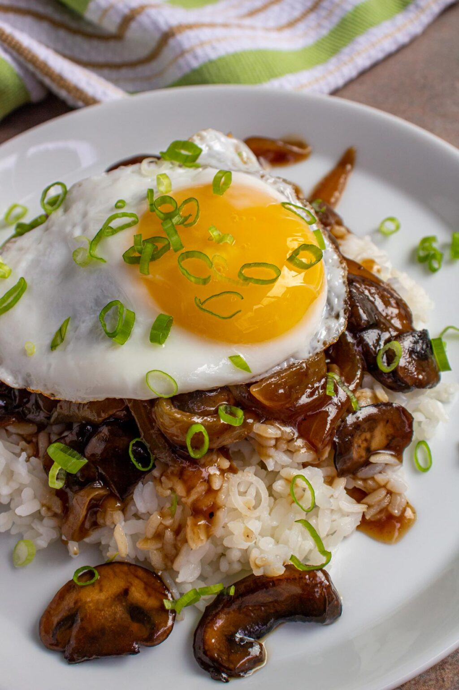

Loco Moco

Loco Moco
Ingredients
- Rice
- Ground Beef
- Mushrooms
- Beef Broth
- Beef Broth
- Shoyu
- Worcestershire Sauce
- Cornstarch
Steps
- Combine ground beef with chopped onion,
garlic, Worcestershire sauce, salt, and pepper
in a mixing bowl.
- Shape meat into 4 equal-sized patties and refrigerate
until you're ready to cook them.
- Caramelized onion wedges in a little oil in
your skillet. Set aside for gravy.
- Cook burgers in skillet.
- Saute sliced cremini mushrooms in skillet
until tender. Add caramelized onion wedges, beef
broth, shoyu, and Worcestershire sauce.
- Thicken gravy with a bit of cornstarch.
- Fry an egg sunny side up.
- Place rice on a plate followed by hamburger and egg.
Pour gravy on top.